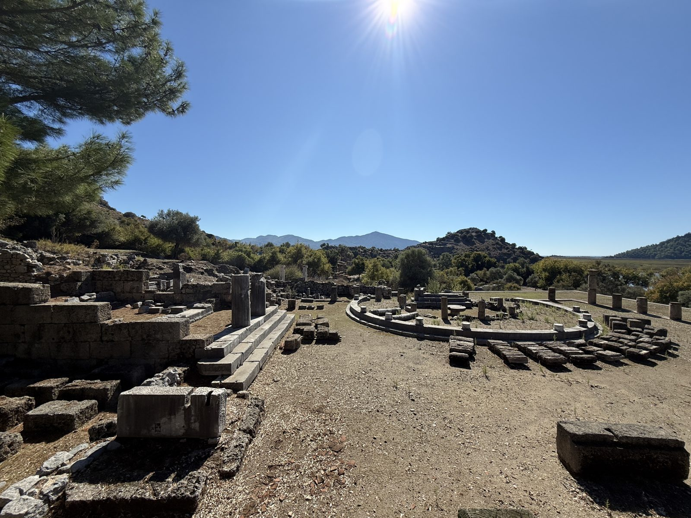
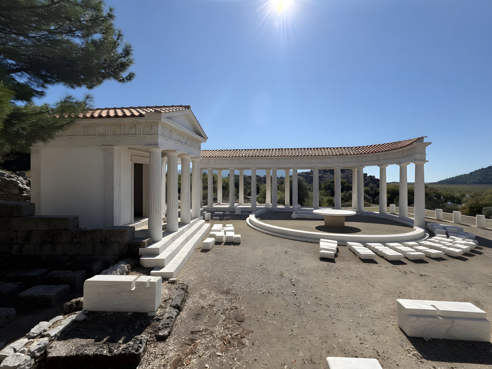
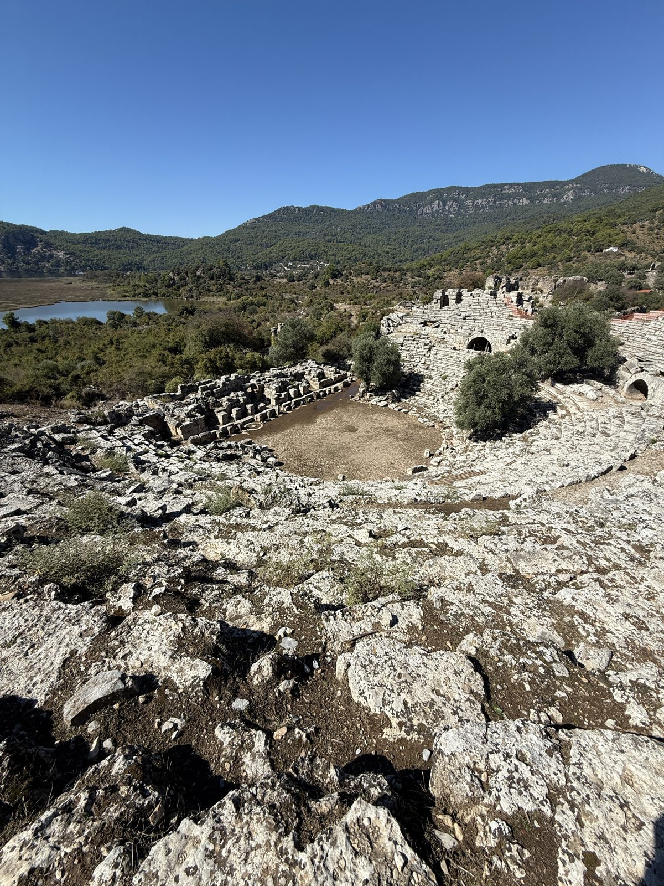
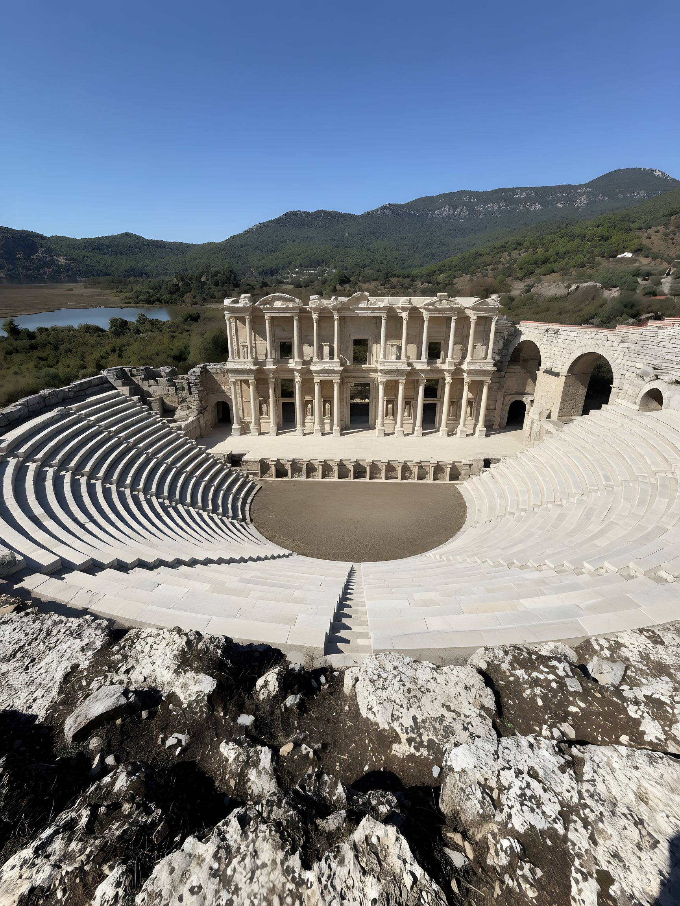
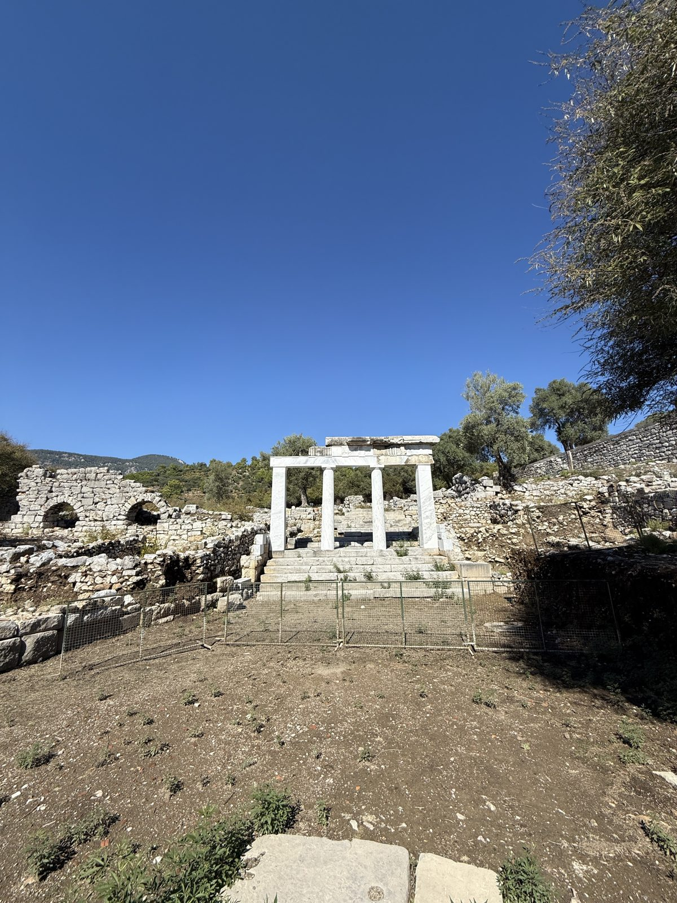
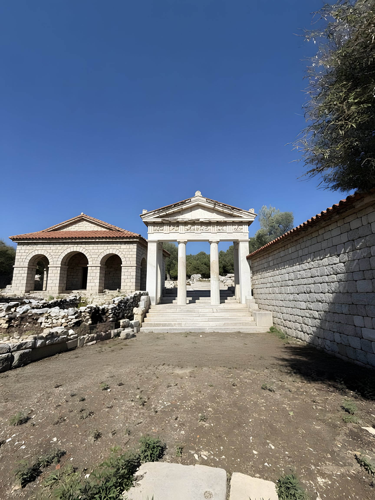

Террасный храм и круглая постройка
Слева на фото ступени храма с двумя барабанами колонн, справа кольцо каменных блоков, в глубине остатки колоннады двора.


Священный двор на искусственной террасе над гаванью и агорой. В его конце стоял небольшой дорический храм Зевса Сотера, Зевса-Спасителя: посвящение прочли на барабане колонны. Перед храмом, точно на его оси, стояла круглая постройка без входа: кольцо колонн вокруг круглого алтарного стола на цилиндрическом основании и экседра. Раз войти в неё было нельзя, археологи считают её абатоном-герооном, местом почитания основателя города.
Под центром круга, на 6,5 м ниже пола, стоит байтил: пирамидальный священный камень высотой 3,5 м, которому поклонялись ещё до постройки храма, с V в. до н. э. Его чеканили на монетах Кавноса как знак Басилевса Кавния, бога-царя города. Весь двор был обведён колоннадой; в конце VI в. в его юго-восточном углу поставили трёхнефную церковь, от неё осталась апсида.
Длинные прямоугольные блоки, уложенные радиальными рядами снаружи кольца, на реконструкции оставлены на своих местах как каменные лежаки. На схеме с таблички их нет, а в отчёте раскопок 1971 года вокруг постройки упомянуты только найденные «архитектурные детали»; так что это могут быть и блоки антаблемента колоннады, разложенные археологами. Точного ответа в доступных источниках нет.
- Храм построен во второй половине I в. до н. э.
- Храм в антах, 9,60 × 6,78 м, дорический ордер
- Двор 30,50 × 35,00 м, колоннада из песчаника
- Байтил: высота 3,5 м, глубина 6,5 м ниже пола
- Церковь: конец VI в., три нефа
Табличка у руин: Teras Tapınağı ve Yuvarlak Yapı
Театр
Снято с верхнего ряда. Внизу орхестра и остатки сценического здания, справа два арочных прохода, в левом углу озеро Сюлюклю.


Городской театр Кавноса, встроенный в склон холма во II в. до н. э. и крупно перестроенный римлянами в I–II вв. н. э. Зрительные ряды, кавеа, охватывают больше полукруга: 33 ряда, разделённые проходом на 18 нижних и 15 верхних, девять клиньев, около 5 000 зрителей. Внизу круглая орхестра, за ней стояло сценическое здание: его римский фасад имел пять дверей и колонны на постаментах, а 16 дорических колонн от более ранней эллинистической сцены использовали повторно.
Зрители входили через два сводчатых прохода, они видны на фото справа и сохранились целиком. Театр смотрит на юго-запад, на город и дельту. Озеро в левом углу кадра, Сюлюклю-гёль, в древности было гаванью Кавноса, вход в неё перекрывали цепью; потом река занесла её илом, и море отступило.
Как именно выглядел фасад сцены здесь, неизвестно, поэтому на реконструкции нарисована типичная двухъярусная римская сцена. Ряды, орхестра и арки стоят на своих местах с фото.
- Кавеа диаметром 73 м, шире полукруга
- 33 ряда: 18 + 15, девять клиньев
- Проход между ярусами 1,74 м
- Орхестра около 21 м
- Вместимость около 5 000
- Материал: местный известняк
Вход в святилище Басилевса Кавния и Аполлона
Четыре мраморные колонны с архитравом над лестницей, слева руины арочной постройки, справа остатки стены.


Колонны стоят на краю главного святилища города. Оно посвящено Басилевсу Кавнию, богу-царю Кавноса: только в эллинистическое время его отдали Аполлону, а до и после оно снова принадлежало местному богу. Это был открытый храм под небом, без крыши и стен, куда веками приносили вотивные дары. С востока к нему примыкал террасный храм с предыдущей пары, с запада участки Артемиды Элевтерии и Афродиты Эвплойи, с юга гаванная агора, с севера пиршественное здание.
С агорой святилище соединял ступенчатый монументальный вход, на плане таблички он подписан как пропилон. Четырёхколонная постройка с лестницей на фото стоит рядом с этой табличкой и совпадает с её описанием, поэтому здесь она достроена как вход: колонны получили антаблемент и фронтон под черепицей, стены по сторонам сложены заново, арочная постройка слева стала целой.
Сопоставление колонн со входом сделано по соседней табличке и её плану. Отдельным источником, где эта постройка названа по имени, оно не подтверждено.
Табличка у руин: Basileus Kaunios / Apollon Kutsal Alanı